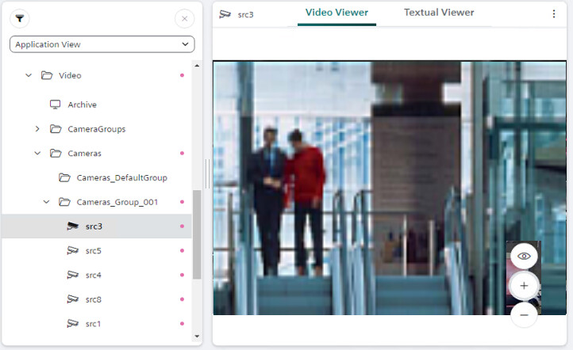
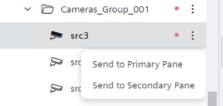
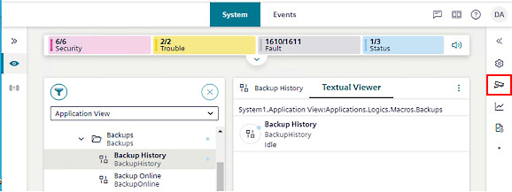
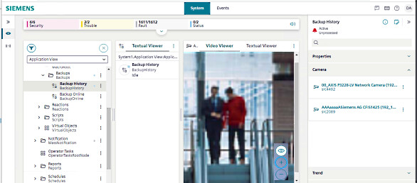

Video Display Procedures
On Flex client you can select a video camera to display its images, and you can also display the video associated to a system object.
Prerequisites
- The top navigation bar is set to System.
- The left sidebar is set to Hierarchies
- System Browser is in Application View.

On Flex clients video streams are displayed as a sequence of 'snapshot' images (resolution 1024 x 768 pixels) with a limited refresh rate: 1 frame/second or less, depending on the type of camera, the performance of the network / VMS recording server, and the number of simultaneous streams.
A Flex station can display images from a camera only in a single-view. There are no multi-camera layouts (2x2, 4x4, and so on) as in the installed client. It is possible to have a single view of one camera in the primary pane, and a single view of another camera in the secondary.
Flex stations do not use monitors and monitor groups to display video images, so there is no interaction with the video displayed on any other station.
View Images from a Camera
You can select a camera to view the images captured by that video source.
- In System Browser select Applications > Video > Cameras > [folder] > [camera].
- The Video Viewer displays the images from the selected camera in the primary pane.

NOTE: You can also view camera images in the secondary pane. To do this:
- In System Browser, select next to the camera and then select Send to Secondary Pane.

- The secondary pane opens, showing images from the selected camera. This allows you to retain the video feed while navigating to other nodes in the primary pane. In this way it is also possible to simultaneously display images from one camera in the primary pane, and images from a different camera in the secondary pane.
Check Cameras Related to a Point
You can access the cameras associated to an object from the contextual pane.
- In the System Browser tree, select the object you want to check.
- If the selected object has associated cameras, a camera icon or heading will appear on the right sidebar.
- If the sidebar is collapsed, select the camera icon to expand it and see the related cameras.
If the sidebar is already open, expand the Camera heading to see the related cameras. 
- Select a camera link to view its images in the secondary pane:

Zoom In or Out on Camera Images
You can use the controls directly in the Video Viewer to zoom in or out on an image.
- Camera images are displayed in the Video Viewer.
- Use and to zoom in/out of the image.
- Use to revert the image to its original size.